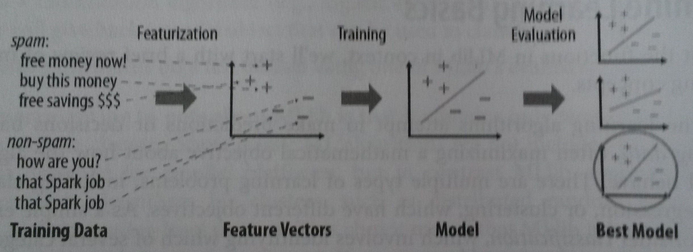

Meetup 13 July
Introduction into Apache Spark
Created by Casper Koning and Robert van Rijn
First we do the talk, then we do the walk
What is Apache Spark?
- Apache Spark is a fast, general engine for large-scale data processing
- Written in Scala
- Key Concepts
- Open sourced, developed at AMPlab at UC Berkeley
- Hybride programming language that runs on the JVM
- Bring the processing to the data
- Store the data in memory
Spark Architecture Model
Coordination is done by the SparkContext object in your main program(called the driver program)

Cluster manager
An external service for acquiring resources on the cluster (e.g. standalone manager, Mesos, YARN)
Worker Node
Any node that can run application code in the cluster
Spark Internals
- RDD(Resilient Distributed Dataset)
- RDD's are the fundamental unit of data in Spark
- Most of Spark programming is performing operations on RDD's
-Resilient: if data in memory is lost, it can be recreated
-Distributed: stored in memory across the cluster
-Dataset: initial data can come from a file or created programmatically
RDD's
- RDDs are immutable:
- RDDs are lazy:
-Each stage of a transformation will create a new RDD
-A DAG (directed acyclic graph) of computation is constructed.
-The actual data is processed only when results are requested.
Transformations and Actions
RDDs support two types of operations

You can chain operations together, but keep in mind that the computation only runs when you call an action.
Time to rock and roll!
- Spark Core
- Spark SQL
- Spark MLlib
- Spark Streaming
- Spark GraphX
nl.ncim.workshop.core
Transformations: map, flatmap, filter
Actions: reduceByKey, groupBy, take
nl.ncim.workshop.sql
Structured data processing. It provides a programming abstraction called DataFrames and can also act as distributed SQL query engine.
Spark MLlib
- Machine Learning Basics
- Programming Abstractions in Spark MLlib
- Example: Predicting Digits
- Getting YOUR hands dirty
Spark MLlib — Machine Learning Basics
Gather and prepare data
"In Data Science, 80% of time is spent on data preparation, and the other 20% is spent on complaining about the need to prepare data"
Select features
"In machine learning and statistics, feature selection, also known as variable selection, attribute selection or variable subset selection, is the process of selecting a subset of relevant features (variables, predictors) for use in model construction"
- Current age for predicting the probability of ending up in hospital in the coming five years.
- $\frac{\text{weight}}{\text{length}^2}$ for predicting percentage of body fat.
- You fall in category $A$, so you are very likely to do $Z$.
Train a model
Select the best model
- Train model with different parameters.
- Model might be too complex, or too simple.
- Evaluate model on some validation set and use cross-validation to find an appropriate model.
Predict

Spark MLlib — Programming Abstractions
- (Dense/Sparse) Vector
- LabeledPoint
- Matrix
- Rating
- Model classes
- Pipeline API
(Dense/Sparse) Vector
- A mathematical vector containing numbers.
- Both dense and sparse vectors.
- Constructed via the
mllib.linalg.Vectorsclass. - Do not provide arithmetic operations.
val denseVec1 = Vectors.dense(1.0, 2.0, 3.0)
val denseVec2 = Vectors.dense(Array(1.0,2.0,3.0))
val sparseVec = Vectors.sparse(4, Array(0,2), Array(1.0, 2.0))LabeledPoint
"LabeledPoint: A labeled data point for supervised learning algorithms such as classification and regression. Includes a feature vector and a label."
val lp = LabeledPoint(1,Vectors.dense(3.14,1.68,1.41))Matrix
- Integer typed row and column indices
- Double values
- Different implementations for distribution purposes (RowMatrix, BlockMatrix, CoordinateMatrix,...).
- Dense and sparse variants

Rating
"Rating: A rating of a product by a user, used in the mllib.recommendation package for product recommendation."Nothing more than a
case class Rating(user: Long, item: Long, rating: Double)Model classes
- Work on RDD[Vector], RDD[LabeledPoint], etc.
- Often follow naming pattern: <problem>With<Algorithm>, e.g. LinearRegresionWithSGD.
- Either the model follows a builder pattern and has a run() method, or it has static train() and predict() methods:
val points: RDD[LabeledPoint] = // ...
val lr = new LinearRegressionWithSGD()
.setNumIterations(200)
.setIntercept(true)
val model = lr.run(points)val model = DecisionTree.trainClassifier(
input = data,
numClasses = 10,
categoricalFeaturesInfo = Map[Int, Int](),
impurity = "gini",
maxDepth = 15,
maxBins = 5
)Pipeline API
- Advanced API for chaining machine learning operations in one workflow
- Uses the more advanced DataFrame features compared to RDD's of simple MLlib abstractions.
- Possible pipeline: Automated feature selection -> Model training -> Validation -> Model selection -> Prediction
Spark MLlib — Example: Predicting Digits
- 42,000 drawings of digits.
- Given a drawing, predict the written digit.
- Classification problem.
- Use Decision Tree approach.